Edexcel GCSE (9–1) History • Option 26/27
Conflict in the Middle East
1945–1995
Key Topic 2: The escalating conflict, 1964–73

David Ben-Gurion reads the Declaration of Independence beneath the portrait of Theodor
Herzl (Tel Aviv, 14 May 1948).
Official Course Textbook
Enquiry: “Why has peace proved so elusive in the Middle
East?”
Contents
|
Lesson 1: KT 2.1: The Six Day War, June 1967
|
Page 2
|
|
Lesson 2: KT 2.2: The Aftermath of the 1967 War & The Rise of Palestinian Resistance
|
Page 11
|
|
Lesson 3: KT 2.3: Israel and Egypt: The War of Attrition and the Yom Kippur War,
1967–1973
|
Page 20
|
L1: KT 2.1: The Six Day War, June 1967[[SRC_MARKER:L4_Start]]
Learning Objectives
Understand the significance of the Cairo Conference (1964) and the growth of Fatah and the
PLO.
Analyze the escalating tension between Israel, Syria and Jordan: Syria’s support for
Fatah, Israel’s raid on Samu and the events of 7 April 1967.
Evaluate the actions of the USSR, Nasser and the USA in the period leading to war, and the
key events of the war.
In June 1967, tensions reached a boiling point. Arab armies massed on Israel's borders, and
fiery rhetoric promised Israel's destruction. But in a stunning, pre-emptive strike, Israel
destroyed the entire Egyptian air force on the ground. In just six days, the geopolitical
landscape of the region was completely transformed.
Did you know?
-
Pre-emptive Strike: Israel launched Operation Focus, destroying over 300 Egyptian aircraft
in a few hours.
-
Golan Heights: Israel captured this strategic high ground from Syria, heavily fortifying
its northern border.
-
Sinai Peninsula: Israel conquered the vast Sinai desert, creating a huge buffer zone
between themselves and Egypt.
Source A: Military Map: The Six-Day War Campaigns (June 1967)
Primary Campaign Map: Map showing the three Israeli offensive fronts in June 1967: Sinai
against Egypt, the West Bank against Jordan, and the Golan Heights against Syria.
Q1. Study Source A. How does the map illustrate the strategic dilemma of fighting a war
on three fronts simultaneously, and how did Israel overcome this geography?
Recall & Retrieval (Key Topic 1: Birth of Israel & Suez)
1. Who became President of Egypt in 1954 and emerged as the champion of
Pan-Arab nationalism?
2. What vital waterway did Nasser nationalise on 26 July 1956,
triggering an international invasion?
3. Which three nations secretly colluded at Sèvres in October 1956 to
attack Egypt?
4. Why was Britain and France forced to halt their military operation
in Egypt in November 1956?
5. What international peacekeeping body was stationed in Sinai and
Sharm el-Sheikh following the 1956 war?
6. What was the political union formed between Egypt and Syria in 1958
called?
7. What Palestinian organisation was officially created at the Cairo
Conference in 1964?
8. What narrow maritime strait controls Israel’s maritime access from
Eilat to the Red Sea?
9. What freshwater dispute escalated border clashes between Israel and
Syria in the mid-1960s?
10. Which global superpower became the primary military supplier and
patron of Egypt and Syria by the 1960s?
Vocabulary Check
Fill in the blanks using the vocabulary words below.
PLO (Palestine Liberation Organisation) | Fatah | Pre-emptive
Strike | Casus Belli
In the 1960s, Palestinian nationalism grew stronger with the creation of the
, an umbrella organization, and its dominant guerrilla faction,
. Border tensions flared violently when Israel launched the
into the West Bank in 1966. These escalating events eventually culminated in June 1967
when Israel launched
, a devastating pre-emptive air strike that wiped out the Arab air forces on the
ground.
The Road to War (1964–1967): Palestinian Nationalism & Border Skirmishes:
SPECIFICATION STUDY MAP: KEY TOPIC 2.1
-
Palestinian Nationalism → Cairo Conference (1964), creation of the
PLO and Fatah.
-
Border Wars & Skirmishes → Disputes over Jordan water, Samu
Raid (1966), 7 April 1967.
-
The Slide to War (May '67) → Soviet misinformation, UNEF
withdrawal, closure of Tiran.
-
The Six Day War → June 5 pre-emptive strike, lightning land war,
redrawn boundaries.
The Cairo Conference (1964) & The Creation of the PLO under Ahmad Shuqayri:
In January 1964, Arab heads of state convened in Cairo to address Israel's diversion of the
River Jordan via the National Water Carrier. To channel and control rising Palestinian
nationalism under Arab governmental oversight, the summit established the
Palestine Liberation Organization (PLO), appointing veteran Palestinian
diplomat Ahmad Shuqayri as its first Chairman. The PLO adopted the
Palestinian National Charter, which called for the total dismantling of the State of Israel
and the establishment of an independent, secular Palestinian state across the entirety of
Mandatory Palestine. However, militant grassroots groups like Yasser Arafat's
Fatah viewed Shuqayri as a bureaucratic puppet of Arab regimes and demanded
an independent, armed guerrilla struggle against Israel.
The Water War: Diverting the Headwaters of the River Jordan:
Fatah and Asymmetrical Warfare: Yasser Arafat’s Guerrilla Strategy: Alongside
this diplomatic development, a radical guerrilla movement called Fatah (founded in 1959 by
Yasser Arafat) began to dominate Palestinian military activity. Unlike older Arab politicians
who relied on conventional state-to-state warfare, Fatah believed that only a grassroots,
irregular guerrilla war could liberate Palestine. At the Cairo Conference, tensions also
flared over a vital shared resource: water. Israel had completed its massive National Water
Carrier engineering project to divert fresh water from the Sea of Galilee south to irrigate
the Negev Desert. Viewing this as an act of aggression, Arab leaders at the conference agreed
to divert the headwaters of the River Jordan (specifically the Dan and Banias rivers) inside
Syria and Lebanon to starve Israel of water.
[[SRC_MARKER:L4_Task_3_0]]Q2. How did disputes over River Jordan water diversion and rising Palestinian guerrilla
(Fatah) raids increase border tensions between 1964 and 1966?
The Syrian Border Crisis: The 1966 Ba'athist Military Coup: By 1965, this
dispute erupted into an active border war. Whenever Syrian workers began building diversion
canals, Israeli tanks and artillery fired across the border to destroy their heavy machinery,
driving Syria and Israel into a cycle of violent border clashes. By 1966, the border between
Israel and its Arab neighbours had become a volatile combat zone. This escalation was fueled
primarily by a radical, left-wing military coup in Syria in February 1966.
Syrian State Sponsorship: Fueling Cross-Border Sabotage Raids: The new Syrian
government adopted a fiercely aggressive posture toward Israel. They began actively sponsoring
Fatah, providing Palestinian guerrilla fighters with funds, modern explosives, and training
bases inside Syrian territory. From these bases, Fatah launched a relentless campaign of
cross-border sabotage raids into Israel. Rather than attacking the Syrian military directly,
Israel's retaliatory strikes focused on the countries from which Fatah fighters infiltrated,
pushing relations to the breaking point:
[[SRC_MARKER:L4_Source_8]]
Source B: Israeli Paratroopers at the Western Wall (7 June 1967)
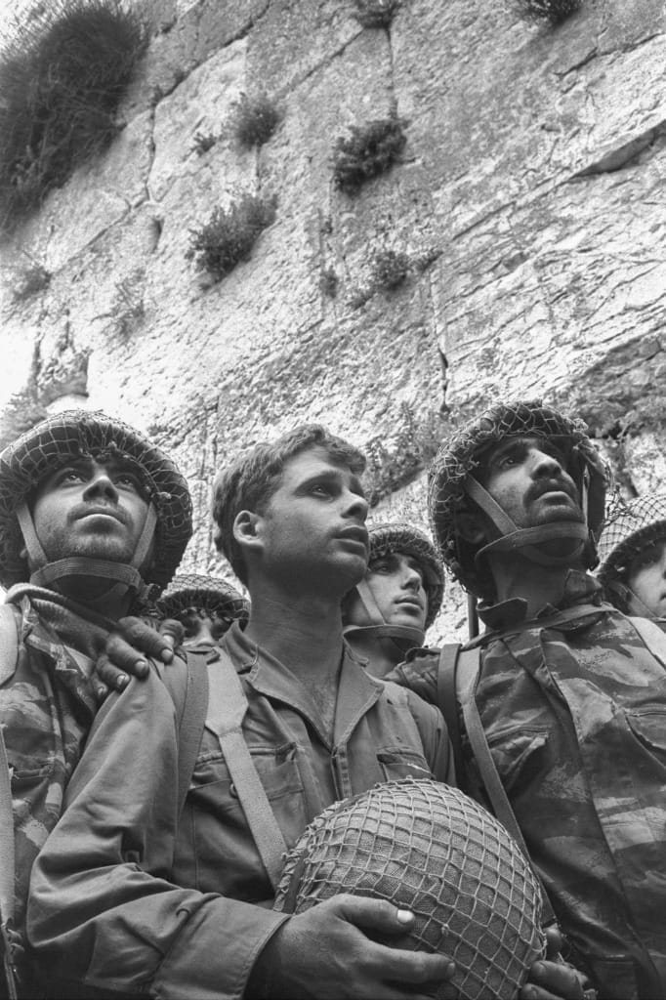
Israeli paratroopers standing in awe before the Western Wall in Jerusalem.
Q3. Study Source B. What does this iconic photograph reveal about the emotional and
religious significance of capturing the Old City of Jerusalem for Israeli
soldiers?
Border Escalation: The Samu Raid (1966) & Aerial Clash over Damascus (1967):
After a Fatah landmine killed three Israeli border policemen, Prime Minister Levi Eshkol
ordered a massive reprisal raid into Jordan, which controlled the West Bank. On 13 November
1966, 600 IDF troops backed by tanks swept into the Jordanian village of Samu, dynamiting
dozens of homes and clashing with the Jordanian military, leaving 15 Jordanian soldiers dead.
The raid deeply embarrassed King Hussein of Jordan, who publicly accused President Nasser of
hiding behind UN peacekeepers instead of helping defend his Arab allies. The Air Clash of 7
April 1967: Skirmishes on the Syrian border erupted into full-scale combat when Syrian
artillery on the Golan Heights began bombarding Israeli tractors farming in the demilitarised
zone. The Israeli air force responded aggressively. In a dramatic aerial dogfight over
Damascus, Israeli fighter jets shot down six Syrian Soviet-built MiG-21 jets in a single
afternoon. This humiliating defeat left the Syrian leadership desperate to find a way to
restore their military honor.
The May 1967 Cascade: Chronology of Diplomatic Crisis:
THE MAY 1967 CASCADE: CHRONOLOGY OF CRISIS
-
13 May → Soviet Misinformation: USSR falsely tells Nasser
Israel is massing troops on Syria.
-
15 May → Egyptian Mobilization: Nasser puts army on
alert, moves troops into Sinai.
-
16 May → UN Out: Nasser orders UN peacekeepers (UNEF) to
evacuate the border buffer.
-
23 May → Maritime Blockade: Egypt closes the Straits of
Tiran, choking Israel's port of Eilat.
-
30 May → Encirclement: King Hussein of Jordan signs a
joint defence pact with Egypt.
Soviet False Intelligence (13 May 1967): The Spark of Crisis: The decisive
trigger that transformed simmering border skirmishes into all-out war occurred on 13 May 1967.
The Soviet Union delivered urgent, fabricated intelligence reports to Egyptian President Gamal
Abdel Nasser and Syrian leaders, falsely claiming that Israel had concentrated 11 to 13
heavily armed brigades along its northern border and was planning an immediate invasion of
Syria set for 17 May. Although UN observers on the ground inspected the Israeli border and
confirmed that no such troop buildup existed, Nasser felt compelled by the Egyptian-Syrian
Mutual Defence Pact of 1966 to act decisively to defend his reputation as the undisputed
champion of the Arab world. Nasser ordered two Egyptian divisions into the demilitarized Sinai
Peninsula, initiating an unstoppable cascade of military escalation.
⚡ Dual-Coding Sequence: Nasser's Fatal Escalation Ladder (May 1967)
Step 1
Mobilization
Sinai Troop Surge
15 May 1967: Prompted by Soviet false reports of Israeli forces on Syrian border,
Nasser moves 100,000 troops into the Sinai.
Step 2
Expulsion
UN Peacekeepers Evicted
16–18 May 1967: Nasser orders the expulsion of UNEF peacekeepers who had guaranteed
the Egyptian-Israeli border since 1957.
Step 3
Blockade (Casus Belli)
Closure of Straits of Tiran
22 May 1967: Egypt blocks Israeli shipping from the Straits of Tiran, cutting off
90% of Israel's oil and making war inevitable.
[[SRC_MARKER:L4_Task_8_0]]Q4. Explain how Soviet false intelligence and Nasser's expulsion of UNEF peacekeepers
triggered the countdown to war in May 1967.
Nasser’s High-Stakes Brinkmanship: UNEF Expelled & Straits of Tiran Blockaded (May
1967):
Over the next ten days, Nasser took a series of aggressive public actions that made war
virtually inevitable. On 16 May, Nasser demanded the immediate, unconditional withdrawal of
the 3,400-strong United Nations Emergency Force (UNEF), which had patrolled
the Sinai buffer zone since the 1956 Suez Crisis. To the shock of Western diplomats, UN
Secretary-General U Thant complied without consulting the Security Council, removing the
international buffer. Egyptian forces immediately reoccupied the fortified naval gun
emplacements at Sharm el-Sheikh. On 22 May 1967, Nasser took the fateful step of closing the
Straits of Tiran to all Israeli-flagged ships and foreign vessels carrying
strategic goods (especially Iranian oil) to Israel's southern port of Eilat. Israel had
explicitly stated in 1957 that closing the Straits would be regarded as a direct
casus belli (an act of war). Nasser accompanied the blockade with incendiary radio
broadcasts over Voice of the Arabs, declaring:
"The Straits of Tiran are our territorial waters... Under no circumstances will we permit
the Israeli flag to pass. Our basic objective will be the destruction of Israel."
The Arab Encirclement: The Jordan-Egypt Mutual Defence Pact (30 May 1967): To
Israel’s horror, King Hussein of Jordan flew to Cairo and signed a mutual defence treaty with
Nasser, placing the Jordanian army under the command of an Egyptian general. Israel now faced
a fully coordinated military encirclement on three fronts by armies openly calling for its
destruction. Believing an Arab invasion was imminent, the newly formed Israeli National Unity
Government—including war hero Moshe Dayan as Defense Minister—decided to launch a pre-emptive
strike to secure its survival.
Operation Focus (5 June 1967): The Decisive Pre-Emptive Air Strike: On the
morning of 5 June 1967, Israel launched Operation Focus, the most successful pre-emptive air
strike in modern military history. At 7:45 AM, nearly the entire Israeli air force flew low
over the Mediterranean Sea to evade Egyptian radar, catching the Egyptian air force completely
by surprise as they ate breakfast. Within three hours, Israeli jets bombed the runways and
destroyed 309 of Egypt's 340 combat aircraft while they were still parked on the tarmac.
[[SRC_MARKER:L4_Task_12_0]]Q5. Describe the operational success of Israel's preemptive airstrike (Operation Focus)
on 5 June 1967.
Absolute Air Supremacy: Neutralising Syrian and Jordanian Airfields: Later
that day, when Syria, Jordan, and Iraq entered the war, Israel turned its jets on their
airfields, destroying their air forces as well. By the end of day one, Israel had secured
absolute air superiority, guaranteeing its ground forces total protection and leaving Arab
infantry completely exposed to aerial attack.
[[SRC_MARKER:L4_Source_16]]
Source C: Operation Focus: The Destruction of Egyptian Airfields (5 June 1967)
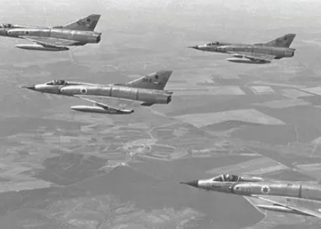
Israeli aircraft dominating the skies after destroying the Egyptian Air Force on the ground.
Q6. Study Source C. Why was Israel’s preemptive strike against Egyptian airfields in
Operation Focus decisive in securing total air superiority and victory in just six
days?
Tactical Execution: The Air Superiority Infographic:

The Southern Front: Israeli Armoured Columns Sweep the Sinai: With the skies
secured, the IDF launched a highly coordinated, three-front blitzkrieg that redrew the map of
the Middle East in just six days. The Southern Front (Egypt): Israeli tank divisions led by
General Ariel Sharon and General Israel Tal raced across the Sinai Desert, routing the
Egyptian forces and advancing all the way to the east bank of the Suez Canal, capturing the
entire Sinai Peninsula and the Gaza Strip.
[[SRC_MARKER:L4_Task_15_0]]Q7. What territories did Israel capture during the Six-Day War, and how did this
transform Israel's strategic depth and political challenges?
The Eastern and Northern Fronts: Capturing East Jerusalem and the Golan: The
Eastern Front (Jordan): After Jordan began shelling West Jerusalem, Israeli forces launched a
fierce counter-offensive. They captured the entire West Bank and, in a deeply emotional
victory, took control of the Old City of East Jerusalem, reuniting the city under Jewish
control for the first time in 2,000 years. The Northern Front (Syria): On 9 June, Israeli
forces turned north and scaled the steep cliffs of the Golan Heights under heavy Syrian fire,
capturing the strategic plateau and putting the Syrian capital of Damascus within range of
Israeli artillery. Following the ceasefire, Arab leaders gathered at the Khartoum Arab Summit
in Sudan in August 1967. Despite their catastrophic military defeat, the Arab League adopted
the defiant resolution known to history as the Khartoum Three Nos:
No peace with Israel, no recognition of Israel, no negotiations with Israel. This
entrenched position slammed the door on immediate diplomatic compromise and ensured that the
Middle East remained locked in a perpetual state of war.
The Six-Day Ceasefire: Tripled Territory and a Shattered Balance of Power: By
the time a United Nations ceasefire took effect on 10 June 1967, the war was over. Israel had
achieved a miraculous victory, defeating three major Arab armies and expanding its territory
to three times its pre-war size. Following the ceasefire, Arab leaders gathered at the
Khartoum Arab Summit in Sudan in August 1967. Despite their catastrophic
military defeat, the Arab League adopted the defiant Khartoum Resolution,
famously remembered as the "Three Nos":
No peace with Israel, no recognition of Israel, no negotiations with Israel. This
entrenched position slammed the door on immediate diplomatic compromise and ensured that the
Middle East remained locked in a perpetual state of war.
The Territorial Balance Sheet: Strategic Depth vs Demographic Dilemma:
|
Captured Territory
|
Captured From
|
Strategic Value
|
| Sinai Peninsula |
Egypt |
Vast desert buffer zone |
| Gaza Strip |
Egypt |
Eliminated Fedayeen bases |
| West Bank |
Jordan |
Defensible borders (Jordan) |
| East Jerusalem |
Jordan |
Holy Sites (Western Wall) |
| Golan Heights |
Syria |
Protected Galilee farming |
✍️ Consolidation & Discussion
Recall & Analysis
Q8. Was Israel's launch of Operation Focus a necessary act of national self-defense or an
opportunistic territorial expansion?
Guidance: Weigh the acute danger of Nasser's blockade of Tiran and Arab
military mobilization against the long-term territorial expansion that followed.
🚪 Exit Ticket: Split-Perspective Front Page
Exit Ticket · Split-Perspective Headlines
Write two punchy, 6-word newspaper headlines capturing the historic shock
of the Six-Day War (10 June 1967):
• Headline A (Israeli Perspective - The Jerusalem Post): Summarize the capture of the
Old City and new defensive depth.
• Headline B (Arab Perspective - Al-Ahram, Cairo): Summarize the shock of the "Naksa"
(Setback) and loss of Sinai and Jerusalem.
Teacher Guidance: Strict constraint: Exactly 6 words per headline! Ensure
each captures the emotional and geopolitical reality of each side.
L2: KT 2.2: The Aftermath of the 1967 War & The Rise of Palestinian Resistance[[SRC_MARKER:L5_Start]]
Learning Objectives
Understand UN Resolution 242 and the continued dispute over the Suez Canal.
Analyze the situation of Palestinian refugees and the significance of the occupied
territories: Golan Heights, Gaza Strip, West Bank, Sinai and East Jerusalem.
Evaluate the use of terrorism, Israel’s response and international attitudes towards the
Palestine issue: the PFLP airplane hijacks of 1970; Black September and the Munich
Olympics; and the expulsion of the PLO from Jordan (1970).
The Six Day War left Israel holding territories completely inhabited by Palestinians: the West
Bank, Gaza Strip, and East Jerusalem. While Israelis celebrated the reunification of
Jerusalem, the UN passed Resolution 242 demanding they withdraw. The ongoing occupation of
these lands remains the core of the conflict today.
Did you know?
-
Resolution 242: The famous UN resolution stating 'land for peace', demanding Israeli
withdrawal from occupied territories.
-
The PLO: Following the Arab defeat, the Palestinian Liberation Organisation emerged as an
independent military force.
-
East Jerusalem: Israel unilaterally annexed the eastern half of the holy city, a move not
recognised internationally.
Source A: UN Security Council Resolution 242 (22 November 1967)
Extract from UN Security Council Resolution 242, establishing the formula of "land for
peace" following the Six-Day War.
Q1. Study Source A. Why did the phrase "withdrawal from territories occupied in the
recent conflict" in UN Resolution 242 create such intense and lasting disagreement between
Israel and Arab states?
Recall & Retrieval (Lesson 5: The Six Day War)
1. What was the codename of the surprise Israeli air strike that
launched the Six Day War on 5 June 1967?
2. Approximately how many Egyptian combat aircraft were destroyed on
the ground within the first three hours?
3. Which four major territories did Israel capture and occupy during
the Six Day War?
4. From which country did Israel capture the West Bank and the Old City
of Jerusalem in 1967?
5. From which country did Israel capture the Golan Heights in 1967?
6. From which country did Israel capture the Sinai Peninsula and Gaza
Strip in 1967?
7. What landmark United Nations Security Council Resolution was passed
in November 1967 establishing the "land for peace" formula?
8. What were the "Three No's" agreed by Arab leaders at the Khartoum
Summit in August 1967?
9. Who was Israel’s Minister of Defense during the Six Day War who
became an international icon of victory?
10. What Egyptian waterway was closed to international shipping from
1967 to 1975 due to sunken ships and Israeli occupation of its east bank?
Vocabulary Check
Write a historically accurate sentence connecting two terms from the glossary box below.
UN Resolution 242 | Khartoum Resolution | PFLP |
Black September | Operation Wrath of God
Your Sentence:
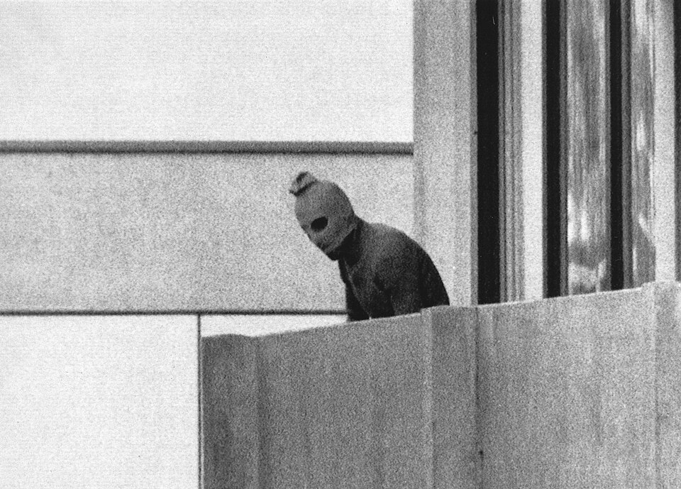
The Diplomatic Stalemate: UN Resolution 242 and 'Land for Peace' (November 1967):
The lightning ending of the Six Day War left the Middle East in a deep diplomatic deadlock. On
22 November 1967, the United Nations Security Council unanimously adopted Resolution 242. This
resolution was designed to establish the guiding principles for a "just and lasting peace" in
the region, introducing the fundamental "land for peace" formula. Resolution 242 stressed the
"inadmissibility of the acquisition of territory by war" and called for: 1. The withdrawal of
Israeli armed forces from territories occupied in the conflict. 2. The termination of all
states of belligerency, and respect for the right of every state in the area to live in peace
within secure and recognized borders. 3. A just settlement of the refugee problem.
The Diplomatic Formula: Graphic Analysis of Resolution 242:

Linguistic Loopholes: 'Territories' vs 'The Territories' & The PLO Rejection:
However, the resolution's deliberate ambiguity created long-term loopholes that both sides
exploited. The English text called for withdrawal from "territories occupied," omitting the
definite article 'the'. Israel’s government argued this meant they were not required to
withdraw from all the occupied land, but rather from some territories, to ensure "secure and
recognized" borders. Conversely, the equally official French version translated the phrase as
"des territoires occupés" (from the territories), which the Arab states interpreted as a
mandate for a complete Israeli return to the pre-war boundaries. The PLO immediately rejected
Resolution 242 because it referred to the Palestinians merely as a "refugee problem" rather
than as a nation with a legitimate right to self-determination and statehood.
[[SRC_MARKER:L5_Task_2_0]]Q2. Explain why UN Security Council Resolution 242 (November 1967) failed to secure a
permanent peace treaty between Israel and the Arab states.
The Arab Response: The Khartoum Summit and the 'Three Noes' (August 1967):
The Arab states responded defiantly at the Arab League Summit in Khartoum in August 1967. They
issued the famous "Three Nos" of Khartoum: No peace with Israel, No recognition of Israel, and
No negotiations with Israel. This diplomatic deadlock meant the Suez Canal—which Egypt had
blocked at the start of the war—remained closed. The canal became a heavily fortified military
front line separating the Egyptian army on the west bank from the IDF on the east bank,
leading directly to the War of Attrition (1969–1970).
The Second Refugee Crisis: 300,000 Newly Displaced Palestinians: The Six Day
War triggered a second massive wave of Palestinian displacement. Approximately 300,000
Palestinian Arabs fled the West Bank and Gaza Strip during the fighting, with many being
forced to flee for a second time from existing refugee camps. The vast majority crossed the
River Jordan, putting immense economic strain on Jordan. This left over 1.5 million
Palestinians living under military occupation or in crowded, temporary UNRWA camps.
Strategic Buffer Zones: The Geography of Israeli Military Security:

Strategic Buffers vs Annexation: The West Bank, Sinai, and Golan Heights: For
Israel's security, the captured territories held immense strategic and military significance.
The territories acted as vast physical buffers. The Sinai Desert kept Egyptian artillery far
from Israel's borders, the West Bank created a defensible border along the River Jordan, and
the Golan Heights prevented Syria from shelling Israeli farming villages in Galilee. The Golan
Heights also provided vital water sources, while the Sinai Peninsula offered oil fields in the
Gulf of Suez. Israel immediately annexed East Jerusalem, declaring the unified city its
eternal capital.
The Settlement Policy: Colonisation and Demographic Control: However, the
occupation quickly became a source of deep political and demographic division. In September
1967, Israel established its first Jewish settlement in Gush Etzion on the West Bank. Under
both Labor and Likud governments, Israel promoted a policy of building Jewish settlements in
the occupied territories, offering financial subsidies and tax breaks to settlers. By the late
1980s, the number of settlers rose to over 200,000, creating permanent "facts on the ground"
that fragmented Palestinian society, restricted movement through military checkpoints, and
deeply alienated the local Arab population.
[[SRC_MARKER:L5_Task_7_0]]Q3. How did the Israeli policy of establishing Jewish settlements in the West Bank and
Gaza create an obstacle to future peace?
[[SRC_MARKER:L5_Source_10]]
Source B: Yasser Arafat and the Rise of Fatah Following the Battle of Karameh (1968)
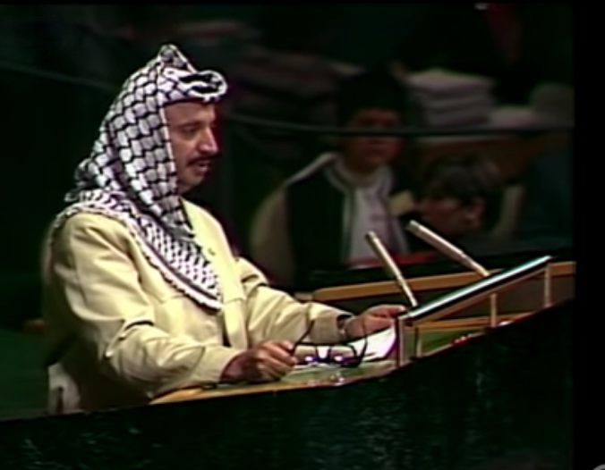
Yasser Arafat addressing Palestinian commandos following the Battle of Karameh in 1968.
Q4. Study Source B. How did Yasser Arafat use the 1968 Battle of Karameh to establish the
PLO as an independent fighting force separate from Arab state control?
The Battle of Karameh (March 1968) & Yasser Arafat’s Rise to PLO Leadership:
Disillusioned by the complete failure of conventional Arab state armies in the Six Day War,
Palestinians turned to independent guerrilla resistance. On 21 March 1968, Israel launched a
massive punitive armored raid into Jordan targeting the Fatah headquarters in the border town
of Karameh. Expecting a swift reprisal, Israeli forces were met by fierce,
entrenched resistance from Fatah guerrillas fighting shoulder-to-shoulder with Jordanian
artillery units under King Hussein. Although the IDF destroyed the base and killed over 100
militants, they suffered 28 dead, 69 wounded, and were forced to abandon four disabled tanks
behind in Jordanian territory. Karameh was celebrated across the Arab world as a legendary
moral victory that proved Palestinians could stand and fight the invincible IDF. Thousands of
young volunteers flooded into Fatah recruitment centers. In February 1969, the Palestinian
National Council officially elected Arafat PLO chairman (Yasser Arafat),
replacing the discredited Ahmad Shuqayri and establishing Fatah as the undisputed dominant
faction of the Palestinian national movement.
The Disillusionment with Arab Armies: The Shift to Independent Guerrilla Struggle:
International Aviation Terrorism: The PFLP Dawson Field Hijackings (September
1970):
While Arafat focused on cross-border raids, rival Marxist-Leninist factions like the
Popular Front for the Liberation of Palestine (PFLP), founded by Dr. George
Habash, sought to thrust the Palestinian cause onto the global television screen through
spectacular international terrorism. Between 6 and 9 September 1970, PFLP commandos hijacked
four Western passenger airliners (Swissair, TWA, BOAC, and Pan Am). Three of the jets,
carrying over 300 civilian hostages, were forced to land at
Dawson Field (Dawson's Field), a remote abandoned British desert airstrip
near Zerqa in Jordan. After releasing the non-Jewish and non-Israeli passengers, the hijackers
held 56 hostages while demanding the release of Palestinian prisoners in European and Israeli
jails. On 12 September, after evacuating the remaining hostages, the PFLP blew up all three
multi-million-dollar jetliners simultaneously before assembled international news cameras. The
humiliating spectacle showed that King Hussein had lost control of his own sovereign
territory.
[[SRC_MARKER:L5_Source_13]]
Source C: Map of Fedayeen Bases & The Black September Conflict in Jordan (1970)

Map showing Palestinian fedayeen refugee camps and guerrilla bases in Jordan prior to the
Black September civil war in 1970.
Q5. Study Source C. Using the map, explain why the armed Fedayeen presence in Jordanian
cities directly threatened the sovereignty of King Hussein's monarchy, leading to the
Black September civil war.
The Dual Authority Crisis: The PLO as a 'State-Within-a-State' in Jordan: By
1970, the PLO had established a virtual "state-within-a-state" inside Jordan, collecting its
own taxes, running checkpoints, and launching unauthorized rocket attacks on Israel, which
drew destructive Israeli military reprisals onto Jordanian territory. The Dawson's Field
hijackings were the final straw for King Hussein. He realized that the PLO threatened to
overthrow his Hashemite monarchy and plunge Jordan into a civil war.
The Black September Civil War: Sequence of the Jordan Showdown:
THE BLACK SEPTEMBER CIVIL WAR
Crushing the Resistance: King Hussein's Offensive in Amman (September 1970):
On 17 September 1970, King Hussein declared martial law and ordered his elite, British-trained
army to launch an all-out military offensive against PLO bases in Amman and northern Jordan.
This brutal, ten-day civil war became known as "Black September". The Jordanian army used
heavy artillery and tanks in crowded refugee camps, crushing the PLO forces.
[[SRC_MARKER:L5_Task_13_0]]Q6. Why did King Hussein of Jordan launch a civil war ('Black September') to expel the
PLO from Jordan in September 1970?
Expulsion to Lebanon: The Creation of 'Fatahland' in Southern Lebanon:
Defeated and politically isolated, Yasser Arafat and thousands of PLO fighters were forcibly
expelled from Jordan. They relocated their central headquarters to Lebanon, establishing a new
base of operations in southern Lebanon (known as "Fatahland") and Beirut, which destabilized
Lebanon's delicate political balance. In the wake of their defeat in Jordan, a radical, highly
secretive PLO splinter group calling itself "Black September" was formed to conduct covert
operations against Israeli and Western targets. Their most notorious attack occurred during
the Munich Olympic Games in September 1972.
[[SRC_MARKER:L5_Source_17]]
Source D: Black September Militant on the Balcony at Munich (5 September 1972)
A hooded member of the Black September Palestinian militant group standing on the balcony of
the Olympic Village in Munich on 5 September 1972.
Q7. Study Source D. Why did radical Palestinian militant groups shift toward dramatic
international terrorism like the Munich hostage crisis after the defeat of conventional
Arab armies in 1967?
The Munich Olympics Massacre (September 1972): Global Hostage Tragedy: On 5
September 1972, eight heavily armed Black September terrorists scaled the fence of the Olympic
Village in Munich, killing two members of the Israeli Olympic team and taking nine others
hostage. The terrorists demanded the release of 234 Palestinian prisoners held in Israeli
jails. During a botched rescue attempt by West German police at the Fürstenfeldbruck military
airfield, the terrorists detonated a grenade inside a helicopter containing the bound
hostages. In total, 11 Israeli athletes, five terrorists, and one German police officer were
killed. The massacre unfolded on live television, shocking a global audience of hundreds of
millions. It drew severe international condemnation of Palestinian terrorism, but it also
succeeded in giving the Palestinian cause unprecedented public visibility.
[[SRC_MARKER:L5_Task_15_0]]Q8. What were the objectives and consequences of the Black September terrorist attack
at the 1972 Munich Olympic Games?
Operation Wrath of God: Prime Minister Golda Meir’s Covert Retaliation: In
response, Israeli Prime Minister Golda Meir ordered the IDF to launch heavy bombing raids
against PLO camps in Lebanon and Syria. More significantly, she authorized the Mossad to
launch "Operation Wrath of God"—a highly secretive, global assassination campaign that hunted
down and killed the key planners of the Munich massacre across Europe and the Middle East.
Israel's covert retribution suffered a catastrophic failure during the
Lillehammer Affair in July 1973. A Mossad assassination team tracking Ali
Hassan Salameh (the mastermind of Munich) mistakenly identified and murdered Ahmed Bouchikhi,
an innocent Moroccan-born waiter living peacefully in the Norwegian town of Lillehammer. Six
Israeli agents were arrested, convicted by Norwegian courts, and publicly exposed, creating an
international scandal. Three years later, in July 1976, Palestinian and German militants
hijacked an Air France flight to Uganda. In Operation Entebbe, Israeli
commandos flew 2,500 miles under radar to rescue 102 hostages in a daring 53-minute assault,
demonstrating Israel's global reach against international terrorism.
✍️ Consolidation & Discussion
Recall & Analysis
Q9. Did the turn toward international aircraft hijackings and the Munich attack advance or
destroy the legitimacy of the Palestinian national movement?
Guidance: Consider how spectacular violence forced the world to acknowledge
Palestinian national identity, but also branded the movement as terrorists in Western eyes.
🚪 Exit Ticket: The 3-Minute Paper 2 Speed-Run
Exit Ticket · Paper 2 Micro-Drill
In Edexcel Paper 2, Question 1 is always a 4-mark question:
"Explain one consequence of..." Spend 3 minutes writing a single PEEL paragraph
for today’s topic:
• Question: Explain one consequence of the Battle of Karameh (1968) for the Palestinian
resistance movement.
• Structure Requirement: State your Point (1 mark), provide specific historical Evidence
[e.g. Fatah recruitment, Arafat prestige] (1 mark), and Explain the consequence (2
marks).
Teacher Guidance: Write with precision. Avoid generic fluff.
L3: KT 2.3: Israel and Egypt: The War of Attrition and the Yom Kippur War, 1967–1973[[SRC_MARKER:L6_Start]]
Learning Objectives
Analyze Egyptian relations with Israel, the USA, the USSR and other Arab states.
Understand Israel’s consolidation of control of the occupied territories.
Describe the key events of the Yom Kippur War (1973) and its aftermath.
Determined to avenge the humiliation of 1967 and regain the Sinai Peninsula, Egypt's Anwar
Sadat launched a surprise attack on Israel during Yom Kippur, the holiest day in the Jewish
calendar. The initial Arab success shattered Israel's feeling of invincibility and forced them
back to the negotiating table.
Did you know?
-
Yom Kippur: October 6, 1973, when Egyptian and Syrian forces launched their coordinated
surprise attack.
-
The Bar Lev Line: The supposedly impenetrable Israeli sand defenses along the Suez Canal,
which Egypt breached in hours using water cannons.
-
Oil Embargo: Arab oil-producing states stopped selling oil to countries supporting Israel,
causing a global economic crisis.
Source A: Operation Badr: Egyptian Troops Crossing the Suez Canal (October 1973)
Primary Photograph: Egyptian infantry and pontoon bridges crossing the Suez Canal during
Operation Badr on 6 October 1973.
Q1. Study Source A. How did the Egyptian surprise assault across the Suez Canal in
Operation Badr overcome the Bar-Lev Line and completely shatter Israeli assumptions of
military invulnerability?
Recall & Retrieval (Lesson 6: Occupied Territories & Resistance)
1. What was the massive sand-wall fortification line built by Israel
along the eastern bank of the Suez Canal after 1967 called?
2. Who became Chairman of the Palestine Liberation Organization (PLO)
in 1969?
3. What country expelled the PLO in September 1970 after international
airline hijackings?
4. What tragic terrorist attack carried out by Black September in 1972
resulted in the murder of 11 Israeli athletes?
5. What country became the new base of operations for the PLO after
their expulsion from Jordan in 1970?
6. Who succeeded Gamal Abdel Nasser as President of Egypt following
Nasser’s death in September 1970?
7. What was the undeclared artillery and air duel fought between Egypt
and Israel along the Suez Canal from 1968 to 1970 called?
8. What formula was established by UN Resolution 242 demanding Israeli
withdrawal in exchange for peace?
9. What did the Arab Khartoum Resolution mean by the "Three No’s"?
10. What strategic plateau did Israel capture from Syria in 1967 that
protected northern Galilee?
Vocabulary Check
Write a clear definition and a historically accurate sentence for the term:
War of Attrition

The War of Attrition (1969–1970): Nasser’s Artillery Duel on the Suez Canal:
The immediate aftermath of the 1967 war did not bring peace, but rather a grueling, undeclared
border war along the Suez Canal known as the War of Attrition (1969–1970). Egyptian President
Gamal Abdel Nasser refused to accept the static Israeli occupation of the Sinai Peninsula.
Backed by massive military aid from the Soviet Union, Nasser launched a continuous campaign of
heavy artillery shelling, commando raids, and rocket barrages across the Suez Canal to wear
down the Israeli Defence Forces (IDF) and make the occupation too costly to sustain.
Cold War Escalation: Superpower Involvement along the Canal:

Deep-Penetration Bombing & Soviet SAM-3 Air Defences: Israel responded
aggressively by utilizing its absolute air superiority to conduct deep-penetration bombing
raids into Egypt, targeting Egyptian military garrisons, industrial factories, and
infrastructure along the Nile. To protect his regime, Nasser turned directly to his Soviet
patrons. By 1970, approximately 15,000 Soviet military advisers were stationed in Egypt.
Soviet pilots actively flew combat missions, engaging Israeli jets in dogfights over the
canal, while Soviet engineers constructed advanced SAM-3 surface-to-air missile bases along
the Suez front.
The Rogers Ceasefire & The Death of Gamal Abdel Nasser (September 1970):
Alarmed that this direct superpower clash could drag the United States and the USSR into a
global conflict, US Secretary of State William Rogers intervened. In August 1970, he
successfully brokered a ceasefire that halted the active fighting. However, neither Egypt nor
Israel was committed to substantive peace talks. Shortly after, on 28 September 1970, the
strain of regional politics took its toll when Nasser suffered a sudden, fatal heart attack.
His death shocked the Arab world. Five million mourners flooded the streets of Cairo for his
funeral, marking the end of the charismatic era of Pan-Arabism.
Enter Anwar Sadat: Economic Crisis and the Urgency of Sinai: Nasser was
succeeded by his relatively unknown and underestimated Vice President, Anwar Sadat. Sadat
inherited a country on the brink of political and economic collapse. Egypt's economy was
severely damaged by the continuous military mobilization, the Suez Canal was closed (depriving
Egypt of vital transit toll revenues), and millions of displaced civilians had fled the
devastated cities along the canal zone. Sadat realized that to rebuild Egypt’s economy and
send home his one million mobilized soldiers, he desperately needed to secure the return of
the Sinai Peninsula and reopen the Suez Canal.
[[SRC_MARKER:L6_Task_4_0]]Q2. Why did President Anwar Sadat conclude that Egypt had to launch a war against
Israel, even if Egypt could not achieve complete military victory?
Sadat’s Dual Track Diplomacy: Graphic Analysis:
The Rebuffed Diplomatic Overture: The 1971 'Peace for Sinai' Offer: Between
1970 and 1972, Sadat pursued two distinct diplomatic tracks: The "Peace for Sinai" Offer and
Expelling the Soviet Advisers. Sadat approached Israeli Prime Minister Golda Meir with a bold
proposal based on UN Resolution 242. He offered a formal peace agreement and the reopening of
the Suez Canal in exchange for Israel returning the Sinai Peninsula. Confident in their
military superiority, Golda Meir and her cabinet rejected the offer, refusing to return to the
vulnerable pre-1967 borders.
[[SRC_MARKER:L6_Source_9]]
Source B: The Soviet-Supplied Anti-Tank SAM Umbrella in the Sinai (October 1973)
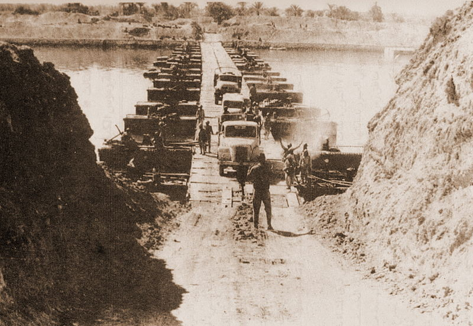
Egyptian soldiers armed with Soviet AT-3 Sagger wire-guided anti-tank missiles beneath the
SAM anti-aircraft umbrella during the Yom Kippur War.
Q3. Study Source B. How did Soviet-supplied anti-tank and surface-to-air missiles (SAMs)
neutralize Israel's armored and air superiority during the early days of the Yom Kippur
War?
The Decision for War: Soviet Advisers Expelled (July 1972): Following
Nasser's death in 1970, Egypt's new President, Anwar Sadat, faced crippling
economic stagnation and widespread domestic student unrest demanding action to liberate Sinai.
Sadat concluded that the United States held "99% of the cards" in Middle Eastern diplomacy,
but realized Washington would never exert pressure on Israel as long as the military status
quo remained frozen. In July 1972, Sadat took a dramatic gamble: he ordered all 15,000
Soviet advisers expelled from Egyptian territory within a week. While Israeli
intelligence interpreted the expulsion as a sign of Egyptian military weakness and disarray,
Sadat’s true motive was twofold: it freed Egyptian military planning from Soviet vetoes, and
signaled to the US that Egypt was not an ideological Soviet satellite. Sadat then formed a
secret military alliance with Syrian President Hafez al-Assad to plan a simultaneous two-front
surprise assault.
Israeli Complacency: Consolidating the Occupied Territories (1967–1973):
While Egypt struggled with stagnation, Israel utilized the years between 1967 and 1973 to
consolidate its firm military and political control over the Occupied Territories (the Sinai,
Gaza, West Bank, Golan Heights, and East Jerusalem). Israel's policy transitioned from a
temporary military occupation to a permanent program of state-sponsored colonization.
The Settlement Expansion: Constructing Permanent Facts on the Ground:
The Impregnable Fortress: Construction & Engineering of the Bar-Lev Line:
Convinced that the vast Sinai desert and the Suez Canal provided impenetrable natural
barriers, Israel spent over $300 million constructing the Bar-Lev Line along
the eastern bank of the canal. Named after Chief of Staff Chaim Bar-Lev, this defensive
barrier consisted of a massive artificial sand rampart rising 20 meters (66 feet) high at a
steep 45-degree angle, backed by 35 heavily fortified concrete bunkers (maozim)
designed to withstand direct 1,000-pound bomb hits. The rampart was protected by dense
minefields, barbed-wire entanglements, and an underwater network of pipes designed to pump
crude oil onto the canal surface and ignite it into an inferno. Israeli military commanders
believed it would take Egyptian engineers at least 24 to 48 hours to breach the sand wall with
bulldozers and explosives, giving Israel ample time to mobilize its armored reserves.
[[SRC_MARKER:L6_Source_13]]
Source C: Military Map: Yom Kippur War — Sinai Front (October 1973)
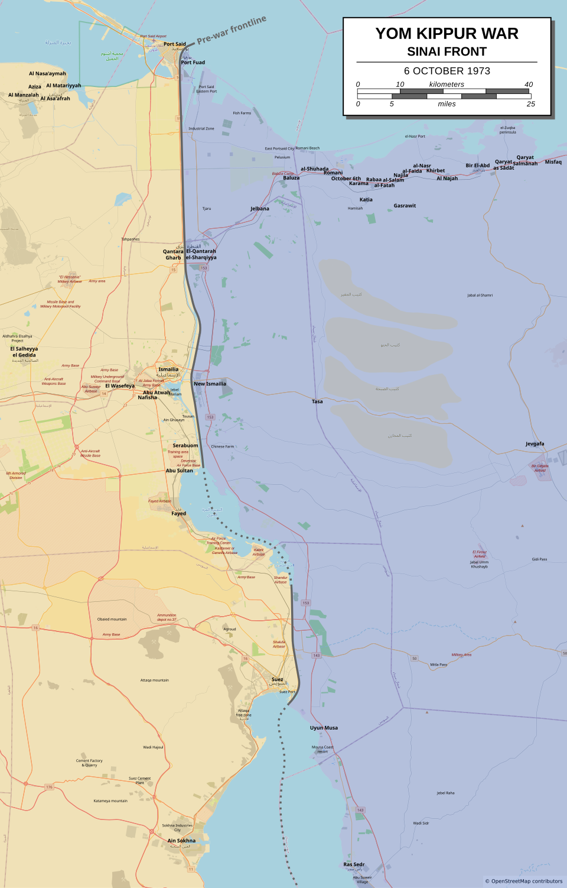
Tactical campaign map of the Suez Canal and Sinai front on 6 October 1973, showing Egyptian
assault crossing sectors, the Israeli Bar Lev fortifications, and the strategic Mitla and
Gidi passes.
Q4. Study Source C. Study the Egyptian crossing points along the Suez Canal on the map.
How did Egyptian forces use the water barrier and geographical depth of the Sinai passes
to catch the Israeli Bar Lev line by surprise?
Operation Badr: The Surprise Two-Front Attack (6 October 1973): By 1973,
these settlements had become permanent "facts on the ground," deeply fragmenting Palestinian
society and convincing Arab leaders that Israel was expanding permanently. On 6 October 1973,
Sadat’s secret plan for war was put into action. Egypt and its ally, Syria, launched a highly
coordinated, two-front surprise attack against Israel.
The Surprise Offensive: Tactical Plan of Operation Badr:
Operation Badr: Breaching the Bar-Lev Line with Water Monitors & SAM-6 Missiles:
At 2:00 PM on 6 October 1973—Yom Kippur (the holiest day in Judaism) and during the Muslim
holy month of Ramadan—the Egyptian military launched
Operation Badr. In a
masterstroke of military engineering, Egyptian troops crossed the canal in rubber dinghies
carrying 450 high-pressure British and German water monitors. Pumping 2,000 gallons of canal
water per minute, the water cannons blasted 60 massive gaps through the sand rampart in just
two hours, washing away three million cubic meters of sand. Simultaneously, over 1,000 mobile
Soviet-supplied
SAM-6 anti-aircraft missiles and man-portable Strela missiles
deployed along the west bank formed an impenetrable aerial umbrella. When the Israeli Air
Force scrambled to support the crumbling canal forts, the SAM-6 batteries shot down dozens of
Skyhawk and Phantom jets in the first 48 hours, neutralizing Israel's greatest military asset.
Within 24 hours, 100,000 Egyptian soldiers and 1,000 tanks had established bridgeheads five
miles deep inside Sinai.
[[SRC_MARKER:L6_Task_13_0]]Q5. How did Egyptian forces achieve total strategic and tactical surprise in Operation
Badr on 6 October 1973?
[[SRC_MARKER:L6_Source_16]]
Source D: Prime Minister Golda Meir Addressing the Nation (October 1973)

Israeli Prime Minister Golda Meir, whose government faced severe criticism for lack of
preparedness in 1973.
Q6. Study Source D. How did Golda Meir explain the devastating initial losses on Yom
Kippur, and why did the intelligence failure (the "Mehdal") lead to her eventual
resignation?
The Northern Front: The Syrian Armoured Assault on the Golan Heights:
Simultaneously, Syrian tank divisions launched a massive assault across the Golan Heights,
overrunning Israel's thin border defenses and threatening to break through into the Galilee.
Caught completely off-guard, Israel suffered catastrophic initial casualties. For the first
three days, the survival of the state hung in the balance. By 10 October 1973, Israeli
reserves were fully mobilized, and the tide of the war began to turn through ruthless military
execution and vital international assistance. On the Northern Front, the IDF successfully
halted the Syrian advance and pushed Syrian forces back beyond the 1967 border.
Cold War Arms Airlifts: Operation Nickel Grass vs Soviet Resupply: On the
Southern Front, the conflict escalated into a massive superpower proxy war. To replace
Israel’s heavy losses, US President Richard Nixon authorized Operation Nickel Grass on 12
October—a massive, direct military airlift of advanced American weapons, tanks, and ammunition
that arrived in Israel on 15 October. Simultaneously, the Soviet Union launched an equally
massive arms resupply to Egypt and Syria. Utilizing their newly arrived equipment, Israeli
tank divisions led by General Ariel Sharon exploited a gap between Egypt's Second and Third
Armies. The IDF crossed the Suez Canal onto the Egyptian mainland, destroying Soviet-bloc SAM
missile sites and completely encircling Egypt's Third Army in the Sinai Desert.
[[SRC_MARKER:L6_Task_15_0]]Q7. Explain how the Yom Kippur War escalated into a dangerous superpower standoff
between the United States and the Soviet Union.
Superpower Confrontation: The Cold War Face-Off:
The Battle of the Chinese Farm & The OPEC Oil Weapon (October 1973): On the
southern front, General Ariel Sharon exploited a seam between the Egyptian Second and Third
Armies at Deversoir, near an agricultural research station mislabeled on Israeli maps as the
"Chinese Farm" (due to Japanese script on the water pumps). In four days of savage,
close-quarters tank combat (15–18 October), Israeli paratroopers secured the corridor and
rafted tank divisions across to the west bank of the Suez Canal, completely encircling the
30,000-man Egyptian Third Army. With Israel threatening to annihilate the Third Army, Soviet
leader Leonid Brezhnev warned President Nixon that Moscow would intervene unilaterally with
Soviet airborne troops. US forces were immediately placed on
DEFCON 3—the
highest peacetime nuclear alert. Meanwhile, King Faisal of Saudi Arabia and Arab OPEC members
deployed the
OPEC Oil Weapon, placing a total oil embargo on the United
States and the Netherlands while cutting production. Global crude oil prices quadrupled from
$3 to $12 a barrel, triggering worldwide stagflation. Following the 25 October ceasefire,
domestic outrage over 2,688 dead Israeli soldiers forced the appointment of the
Agranat Commission of Inquiry, which faulted military intelligence failure
and ultimately drove Prime Minister Golda Meir to resign in April 1974.
[[SRC_MARKER:L6_Task_17_0]]Q8. How did Arab oil producers use the 'oil weapon' in 1973, and what was its impact on
Western diplomacy?
The Ceasefire (25 October 1973): Enforcing the Peace: Choked by a severe
global energy crisis and fuel shortages, President Nixon pressured Israel into accepting a
permanent ceasefire on 25 October 1973.
The Geopolitical Legacy: From Battlefield Stalemate to the Camp David Road:
THE SIGNIFICANCE OF THE YOM KIPPUR WAR
| For Egypt |
For Israel |
For the Peace Road |
|
Sadat restored Egyptian honor and proved the Bar Lev Line was not invincible.
|
Golda Meir and Moshe Dayan resigned due to immense public anger over initial war
failures.
|
Proved military force had limits; forced US into exhaustive "shuttle diplomacy".
|
✍️ Consolidation & Discussion
Recall & Analysis
Q9. Why did both Anwar Sadat and the Israeli leadership claim victory in the 1973 Yom Kippur
War?
Guidance: Contrast Egypt's initial psychological breakthrough and crossing
of the Canal with Israel's encirclement of the Egyptian Third Army.
🚪 Exit Ticket: The Three-Tiered Golden Sentence
Exit Ticket · The Golden Sentence
Write
ONE single, grammatically sophisticated historical sentence explaining
why Anwar Sadat signed the 1979 Egypt-Israel Peace Treaty. Must contain all 3 required
ingredients:
• Ingredient 1 (Date / Stat): Include one date or statistic [e.g., October 1973, 1978,
13 days at Camp David, or the return of the entire Sinai Peninsula].
• Ingredient 2 (Individual / Leader): Name one leader [e.g., Anwar Sadat, Menachem
Begin, or Jimmy Carter].
• Ingredient 3 (Causal Conjunction): Connect your reasoning with an analytical
conjunction [e.g., in order to, resulting in, despite, or whereby].
Teacher Guidance: Focus on the trade-off: recovering Egyptian land in
exchange for peace and diplomatic isolation from the Arab League.
Generated: 2026-09-10 08:13:24 UTC | Unit: cme_new